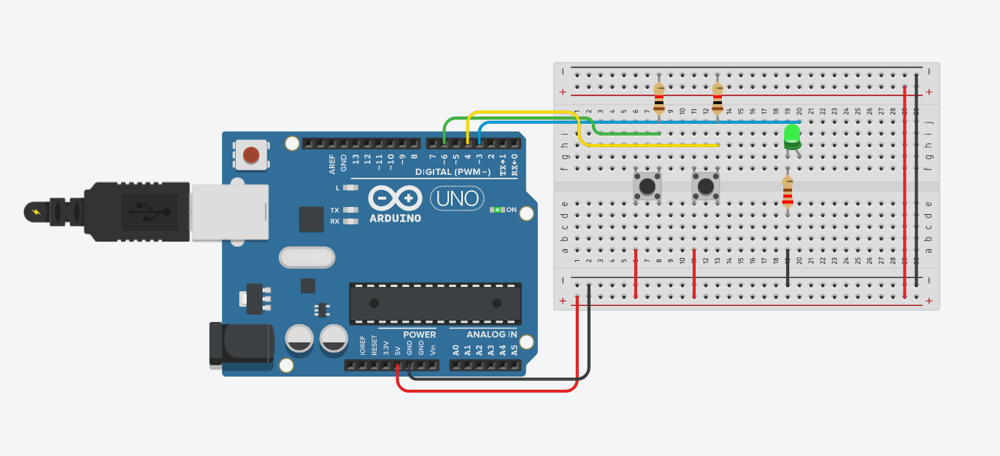
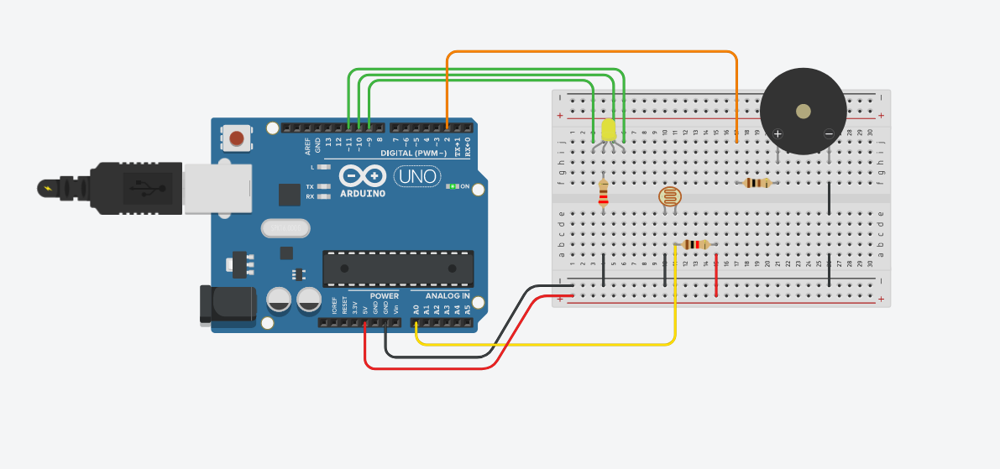
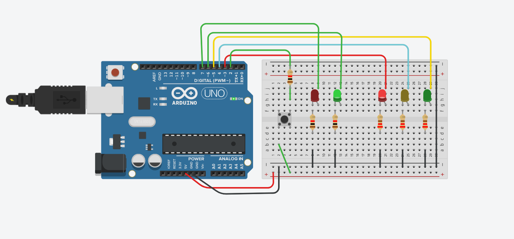
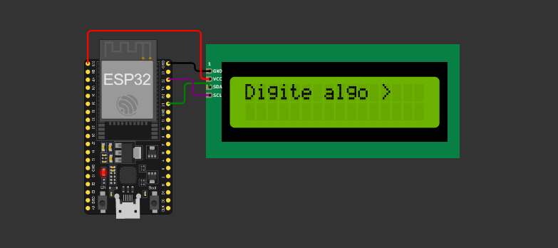
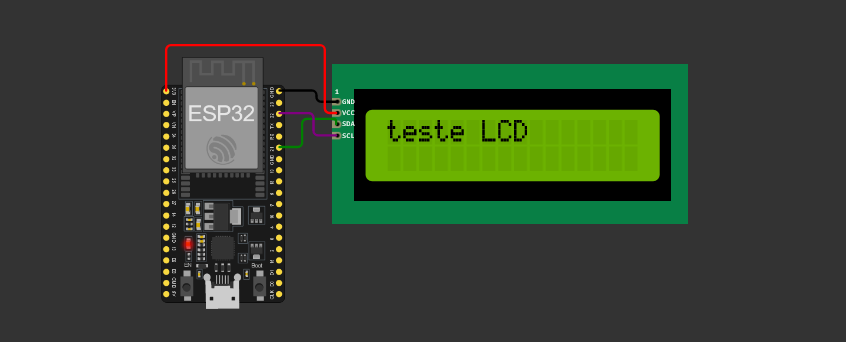

Arduino
No início do semestre, tivemos contato com o sistema embarcado Arduino. Para fins didáticos, usamos a plataforma TinkerCad para desenvolver nossos projetos.

Projetos - Arduino
Botões
Nesse projeto aprendemos a usar: digitalRead(), comando usado para ler sinal digital. Aqui, manipulamos o LED com dois botões, onde cada um deles poderia ligar o LED, caso apertado. Se um deles estivesse pressionado, o LED ligaria. Porém, se ambos estivessem apertados, o LED apagaria.
Armazén
Nesse projeto desenvolvemos um 'sistema de armazén' onde o buzzer sinalizava quando o nível do sensor fotorressistor alterasse. Além do buzzer, o LED RGB mudaria de cor conforme o nível do sensor. Caso o nível estivesse em 50%, o buzzer apitava uma vez e a cor do LED seria verde. Se o nível fosse até 75%, o LED seria amarelo e o buzzer apitava 2 vezes. Por fim, caso o nível fosse maior que 75%, o LED alterava para vermelho e o buzzer apitava três vezes.
LED Analógico

Essa atividade consistia em fazer o LED alterar sua intensidade durante um intervalo de tempo conforme a saída analógica. Se a saída fosse 0, o LED estaria apagado. Caso fosse a intensidade máxima, o LED acenderia e teria um intervalo de 2 segundos para alterar sua intensiadade.
Semáforo
Nesse projeto, desenvolvemos um sistema que simula um semáforo. Os dois LEDs a esquerda seriam o semáforo do pedestre, e os da direita, o do veículo. Aqui, o botão tem a função de acelerar o tempo de execução do sistema.
Esp32

O microcontrolador ESP32 foi outro dispositivo que vimos nas aulas. Para fins didáticos, usamos a plataforma Wokwi.
Projeto - ESP32

Aqui o dispositivo está simulando uma inicialização.
Agora o programa espera receber uma entrada pelo monitor Serial.
Em seguida, a informação é impressa no display LCD.
Ver todos os projetos: